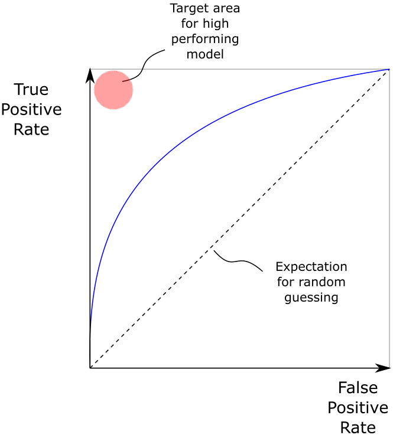
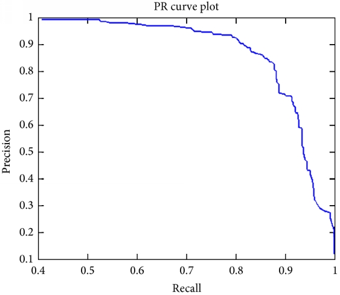

Interview Questions (ML)¶
前51题来自`这里 <https://www.springboard.com/blog/machine-learning-interview-questions/>`_，答案加入了很多我的理解，如有错误欢迎指正。
What's the trade-off between bias and variance?
What is the difference between supervised and unsupervised learning?
监督学习需要有label的数据，包括分类和回归。无监督学习不需要label，目的是从没有label的数据中发掘潜在的结构。
How is KNN different from k-means clustering?
KNN是监督学习的一种，根据 \(x\) 附近的 \(k\) 个点投票预测。
\(k\) -means是无监督学习的一种，通过聚类的方式分析数据。
Explain how a ROC curve works.
ROC全称receiver operating characteristic curve，描述真阳性率（TP/P）和假阳性率（FP/N）在各种阈值下的关系。
如图所示，ROC曲线自左向右表示阈值从1降到0的过程中TPR和FPR的变化。我们往往关注曲线下的面积，面积为0.5时为随机分类，面积越接近1分类能力越强。
Define precision and recall.
精准度（precision）定义为TP/(TP+FP)，从结果角度衡量预测出的正例中有多少是真实的正例。
召回率（recall）定义为TP/(TP+FN)，从真实结果角度出发，描述真实正例中有多少被预测正确。
在阈值从0升到1的过程中，FP减少从而精准度上升，而于此同时FN上升导致召回率下降，可以以此绘制P-R曲线。通过计算P-R曲线下方的面积可以得到AP（Average Precision）指标。
What is Bayes' Theorem? How is it useful in a machine learning context?
贝叶斯定理根据事件的先验概率给出后验概率，具体形式是：
\[P(A \mid B) = \frac{P(B \mid A)P(A)}{P(B)}\]可以很容易的从条件概率的定义推导出来。
Why is "Naive" Bayes naive?
朴素贝叶斯算法通过贝叶斯定理计算条件概率。但它是“朴素的”，原因在于计算过程中进行了如下近似：
\[P(Y=1 \mid X_1=x_1, X_2=x_2) = \frac{P(X_1=x_1 \mid Y=1) \cdot P(X_2=x_2 \mid Y=1) \cdot P(Y=1)}{P(X_1=x_1, X_2=x_2)}\]相当于假设了 \(X_1\) 和 \(X_2\) 间是相互独立的。这个算法的时间复杂度是 \(O(kd)\) ，其中 \(k\) 是label类别数而 \(d\) 是特征维度，因此相比起KNN等一些算法会快很多。
Experience the difference between L1 and L2 regularization.
对于线性回归问题中，我们通过增加L1正则化或者L2正则化来优化最小二乘。最小二乘往往bias较低variance较高，适当增加bias可以减少variance，从而模型预测的结果更加稳定。
如果加入L2范数，我们会得到ridge regression：
\[\hat{\beta}^\text{ridge} = \text{argmin}_\beta \left\{ \sum_{i=1}^N (y_i - \beta_0 - \sum_{j=1}^p x_{ij})^2 \beta_j + \lambda \sum_{j=1}^p \beta_j^2 \right\}\]如果加入的是L1范数，我们会得到lasso regression:
\[\hat{\beta}^\text{ridge} = \text{argmin}_\beta \left\{ \sum_{i=1}^N (y_i - \beta_0 - \sum_{j=1}^p x_{ij})^2 \beta_j + \lambda \sum_{j=1}^p \lvert\beta_j\rvert \right\}\]What is your favorite algorithm, could you explain it to me in less a minute?
What is the difference between Type I and Type II error?
统计学上我们把原假设 \(H_0\) 为真而拒绝原假设称为第一类错误（Type I error），把原假设 \(H_0\) 为假而没有拒绝原假设称为第二类错误（Type II error）。
What's a Fourier transform?
傅立叶变换是一种线性积分变换，将信号在时域和频域间变换。一般的傅立叶变换可以写作：
\[F(w) = \int_{-\infty}^\infty f(t)e^{-iwt} dt\]对于周期函数，我们可以通过傅立叶级数表示为：
\[f(t) = \sum_{n=-\infty}^\infty F_ne^{i2\pi nt/T}\]对于实值函数，我们有：
\[f(t) = \frac{a_0}{2} + \sum_{n=1}^\infty \left[a_n\cos\left( \frac{2\pi nt}{T} \right) + b_n\sin\left( \frac{2\pi nt}{T} \right)\right]\]What's the difference between probability and likelihood?
What is deep learning, and how does it contrast with other machine learning algorithms?
深度学习是机器学习的一个子集，通过链式法则反向传播梯度。
What's the difference between a generative and discriminative model?
判别模型（经过训练）对数据进行分类或回归，而生成模型（根据latent code）生成符合某种性质对特定数据。
What cross-validation technique would you use on a time series dataset?
How is a decision tree pruned?
Which is more important to you? Model accuracy, or model performance?
模型准确度仅仅是模型性能的一个部分，例如上面的precision，recall，和AP指标都用来更客观的衡量模型的性能。
What's the F1 score? How would you use it?
How would you handle an imbalanced dataset?
When should you use classification over regression?
- 首先，分类还是回归取决于输出的类型（如：性别或是身高）。其次，特殊问题下会做特别的处理：
回归车辆的偏航角较为困难，我们选用Multi-Bin的方法，首先对角度区间进行分类，再在该区间内
一些社会实验问题中，我们可能并不关注测试者具体年龄，仅仅关心他们年龄所在的区间
Naming an example where ensemble techniques might be useful.
How do you ensure you're not overfitting with a model?
- 为了避免过度拟合训练数据，有以下方法：
从模型设计的角度讲：更简单的模型（适当增加bias）可以帮助减少模型variance，这既包括线性回归和随机森林、gradient boosting的选择，也包括最小二乘中，采用subset selection和shrinkage method等方法减少模型的variance
从训练数据上，可以使用交叉验证的方式， \(k\) -fold cross-validation
What evaluation approaches would you work to gauge the effectiveness of a machine learning model?
首先将数据集分为训练集、验证集以及测试集。我们在验证集调节模型与参数，最后在测试集横向比较不同模型的性能。因此我们还需要一个评价指标（metric），对于不同的问题我们需要不同的评价指标：ImageNet使用了Top-5 error，KITTI3D检测数据集使用了AP40指标（IoU=0.7），COCO使用的是mAP（对于IoU和scale）和mAR（对于detection数和scale）在不同尺度上的指标。
不同的任务与需求决定使用不同的评价指标，例如目标检测的mAP指标在一些场景下不适用，由于长尾性导致高AP的模型不一定FP/Recall高。
How would you evaluate a logistic regression?
What's the "kernel trick" and how is it useful?
{kind=link}
{kind=link}
---
什么是反卷积？
---
基于深度学习的目标检测技术演进：R-CNN，Fast R-CNN，Faster R-CNN，YOLO，SSD
- R-CNN：
在图像中确定约1000-2000个候选框（selective search）
将每个候选框缩放至相同大小，输入至CNN提取特征
使用SVM对特征进行分类
对于属于某一类别的候选框，根据回归器调整位置
- Fast R-CNN：
在图像中确定约1000-2000个候选框（selective search）
将整张图片输入CNN提取特征
将候选框映射到feature map对应的patch，输入SPP layer
根据提取特征进行分类
对于属于某一类别的候选框，根据回归器调整位置
- Faster R-CNN：
将整张图片输入CNN提取特征
将卷积特征输入RPN，得到候选框信息
对候选框提取到的信息进行分类
对于属于某一类别的候选框，根据回归器调整位置
请简单解释下目标检测中的这个IoU评价函数
IoU计算的是ground truth和预测的bounding box间交集与并集的比值：
\[IoU = \frac{DT \cap GT}{DT \cup GT}\]- 用IoU指标衡量bounding box的准确性有一下优势：
尺度不变性
非负性
对称性
KNN与K-means的区别
KNN是一种memory-based learning，也叫instance-based learning，是监督学习的一种方法。
K-means是一种无监督学习，通过聚类的方法发掘数据潜在的结构与关系。
K-means选择初始点的方法有哪些，优缺点是什么
- 除了随机选取K个点作为初始中心点还有以下三种方法提升性能：
多次随机选取中心点，通过损失函数评价并选择最优的一组
选取间距尽量远的K个中心点
对于文本这样的高维稀疏向量，我们可以选取K个两两正交的特征向量作为初始中心点
简述线性分类器的原理（要求对权重矩阵进行剖析）
请简述下Log Loss，Hinge Loss，Cross-Entropy Loss这三个损失函数
Logistic回归使用的就是Log Loss，它的形式为：
\[L(Y, P(Y \mid X)) = -\log P(Y \mid X)\]- Log Loss的特点包括：
Log Loss能很好对表征概率分布，例如分类场景下估计类别的置信度
相比Hinge Loss对噪声更加敏感
SVM中使用了Hinge Loss，它的形式为：
\[L(y, f(x)) = \max(0, 1 - yf(x))\]- Hinge Loss的特点包括：
a
对于噪声和异常点相对不敏感
Cross-Entropy Loss的形式为：
\[L = -\frac{1}{n}\sum_x \left[ y\ln f(x) + (1-y)\ln(1-f(x))]\]简述正则化与奥卡姆剃刀原则
- 正则化主要的作用是防止过拟合，除了L1和L2正则化，在深度学习中还有：
Max Norm Constraints：对神经元中权重向量量级做约束，同时可以防止梯度爆炸
Dropout：在训练过程中，让神经元随机失活
奥卡姆剃刀原理即简单的模型优先，降低复杂度，避免过拟合
图像尺寸为7x7，卷积窗口大小为3x3，步长为3，输出的尺寸是多少
输出为3x3，计算方法为：
\[(W - F + 2P) / S + 1 = (7 - 3 + 2 * 2) / 3 + 1 = 3\]
为什么说神经网络是端到端的网络？
当参数量远大于样本量的时候，神经网络如何预防过拟合？
正则化
early stopping
dropout
数据增强
什么是感受野？